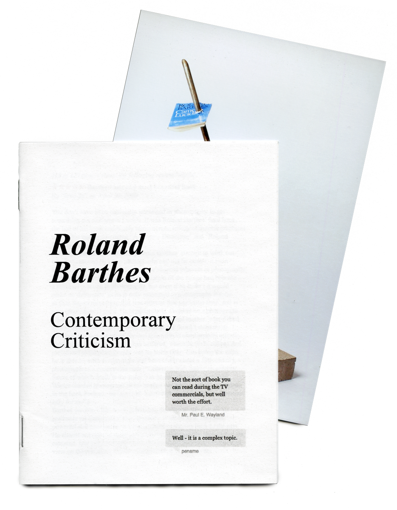
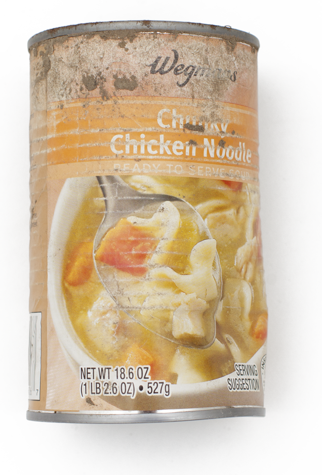

JUST TRYING 2 CENTER MYSELF
Color laser zine (2016)
A collection of recent drawings that navigate bodily experience and the search to be grounded in oneself. Copies available.

ROLAND BARTHES: CONTEMPORARY CRITICISM
Color laser saddle-stitched booklet (2015)
This homage to Barthes lovingly reflects on Camera Lucida, a canonical work of photographic theory, through its Amazon.com online reviews. Organized by their helpfulness rating (last updated November 2015), customers' comments range from thoughtful essays praising Barthes' genius to frustrated rants criticizing academic dryness. The zine comes with two photographs of Untitled (Book punctum), a metal and concrete sculpture that punctures a copy of Camera Lucida.Copies available.
DECEMBER
B&W saddle-stiched booklet (2014)
A chapbook collaboration with Nate Pritts of H_NGM_N. A poem about a tired heart, dark winter, and poor sense of direction with moody, scrawled drawings gasping for air.
Out of stock.

THAT WAS A BEAUTIFUL MORNING
Color saddle-stitched book (2013), edition of 50 signed copies
That was a beautiful morning is a collaboration between friends Robert Deitchler and Lizz Thabet, following the discovery of a dead robin on their doorstep. Nine months later, their conversation uncovered different meanings that experience held for each of them: for Robert, it was the story of faith and childhood; for Lizz, it was the story of an unusual and intimate exchange. This book honors their experiences and weaves together a tale about those moments of connection and intuition, and the symbols that guide people’s lives. It speaks to the power of storytelling that goes beyond the content of any specific narrative. Out of stock.



SOME THINGS I DREW THAT ONE TIME AND THEN PHOTOCOPIED TO GIVE TO YOU
B&W laser saddle-stitched booklet with handdrawn cover (2013)
Early sketckbook selections that crudely and tenderly explore the medium of drawing. Out of stock.
PRESENT MOMENTS
Five color saddle-stitched booklets (2012)
DESCRIPTION. Out of stock.